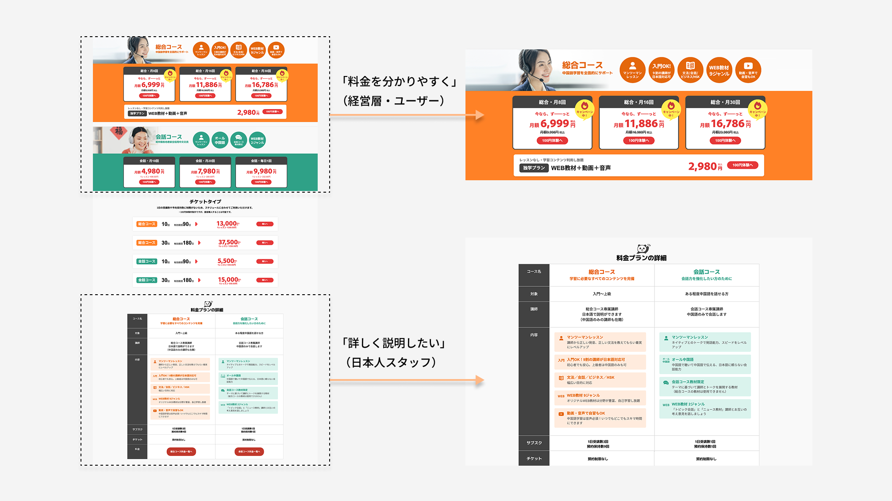
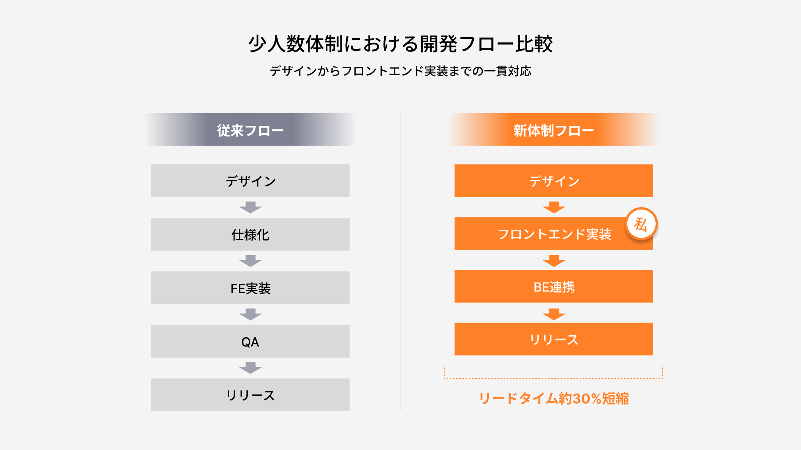

I redesigned an online platform for learning business Chinese.
I handled both design and Vue.js coding. The result was a fresh new look and a more efficient system.
The old site looked outdated. It did not match what users expect from a modern online school. This hurt the brand and made it hard to get new users.
The old system cost a lot of time and money to update. Every small change took too much work. This was a big problem for the team.
The team used outside tools for classes and teacher communication. It was hard to track attendance or manage lessons well. It also cost more money.
We updated the whole visual design and improved the user experience.
What we did:

Results:
After the redesign, more users signed up for a free trial. But not many became paying members. The 5-step sign-up process was too long and stopped users from finishing.
I listened to each person's needs and found a solution that worked for everyone:


✅ Users could start learning faster. More users became paying members.
✅ Customer support questions dropped a lot.
We had a 6-person team with no frontend engineer. So I did both design and coding.

The old site had two separate versions: one for desktop and one for mobile. This took twice as much work to maintain.
I built a responsive design with Vue.js. One code works for all devices. This saved a lot of time and money.

The team used outside video tools. It was hard to check who came to class or how lessons were going.


Teachers had to use many different tools just to check their schedule. This was slow and confusing.
✅ Teachers have less work to do
✅ Teachers said: "It's so easy to manage on my phone"
✅ Class preparation became faster
We are still adding new features. We also made a new platform called NetKOREA for learning Korean. We used the same system but made a new design for it. This showed the system can work for other languages too.